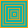

hasapi
キャラクターを動かしてゴールを目指すゲームです。ステージ20まで遊べます。動かない場合、画面を更新してみてください。
オリジナルのステージを作成し、URLを生成することができます。
体力:
ゲームのルール
・体力がなくなるまでにゴールにたどり着くとステージクリアとなります。
操作方法
・十字キー ：歩き。1マス移動します。
・ctrl + 十字キー ：ダッシュ。壁にぶつかるまで直進します。
・Enterキー ：自殺します。
床の種類
通常の床
氷の床 ： 障害物がないと止まることができません。
網の床 ： ダッシュで通過することができず、止まってしまいます。
段差のある床 ： 歩きで進むことができません。
一方通行の床 ： 決められた方向にしか進めません。
オブジェクトの種類
ブロック ： 通過することができません。
エネルギー ： 体力が５増えます。
鍵 ： 取得するとゲートを空けられるようになります。
ゲート ： 鍵がないと通過することができません。
ゴール ： ここに止まるとステージクリアです。ダッシュで通過したり、氷の床で滑って通過してもクリアにはなりません。
透明ブロック ： 一度通過するとブロックになります。
透明エネルギー ： 一度通過するとエネルギーになります。
透明鍵 ： 一度通過すると鍵になります。
透明ゲート ： 一度通過するとゲートになります。
透明ゴール ： 一度通過するとゴールになります。
エディットモードの操作方法
・十字キー ： カーソルを移動します。
・スペースキー ： 床の種類を変更します。
・エンターキー ： オブジェクトの種類を変更します。
・Gキー ： オブジェクトを透明にします。
・Sキー ： プレーヤーのスタート位置を変更します。
・Oキー ： 下のテキストボックスにデータを出力します。
・Uキー ： 下のテキストボックスにステージのURLを出力します。
・Lキー ： 下のテキストボックスからデータを読み込みます。
・上部テキストボックス ： スタート時の残り歩数を設定できます。
・Pキー ： 下のテキストボックスからデータを読み込み、プレイを開始します。